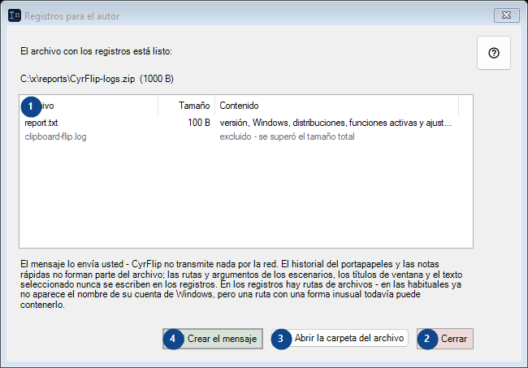
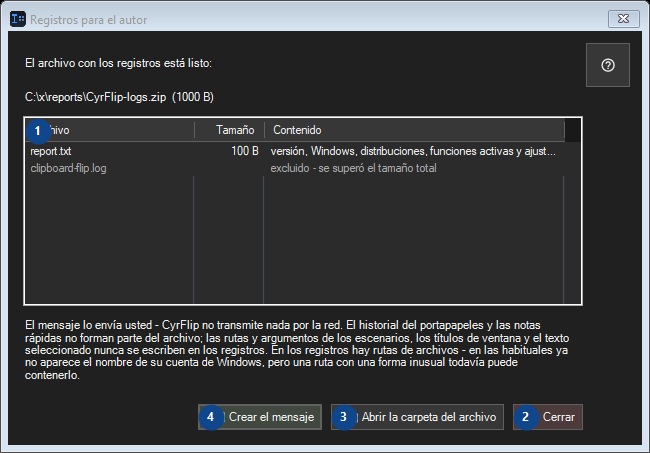

Registros para el autor
Para qué sirve
Lee las explicaciones numeradas, elige los valores necesarios y continúa con el comando de la ventana.


Orden de uso
Lee las explicaciones numeradas, elige los valores necesarios y continúa con el comando de la ventana.
Elementos
1. El archivo con los registros está listo:
Esta zona muestra el contenido o estado actual. Selecciona una entrada para trabajar con ella. Archivo / Tamaño / Contenido
Tus atajos2. Cerrar
Usa este comando para la acción indicada. Lee cualquier confirmación antes de aceptarla.
Tus atajos3. Abrir la carpeta del archivo
Usa este comando para la acción indicada. Lee cualquier confirmación antes de aceptarla.
Tus atajos4. Crear el mensaje
Usa este comando para la acción indicada. Lee cualquier confirmación antes de aceptarla.
Tus atajos